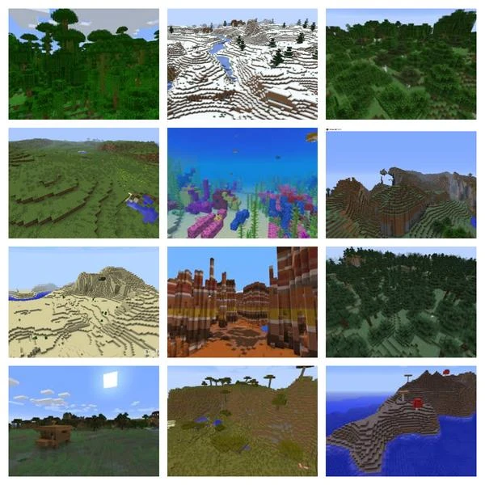

Minecraft Biomes Guide
Biomes are regions in a Minecraft world with varying geographical features, flora, heights, temperatures, and sky and grass colors. Each biome has its own unique features and resources. Here are some of the major biomes you'll encounter:
Forest
Features:
- Abundant oak and birch trees
- Common spawn location for wolves
- Flowers and mushrooms generate here
- Great source of wood in early game
Desert
Features:
- Sand and sandstone blocks
- Dead bushes and cacti
- Desert temples with hidden treasure
- Husks (zombie variant) spawn here
Plains
Features:
- Flat terrain ideal for building
- Horses and donkeys spawn here
- Villages often generate in plains
- Common flowers and tall grass
Ocean
Features:
- Large bodies of water
- Ocean monuments with guardians
- Shipwrecks and buried treasure
- Dolphins and various fish